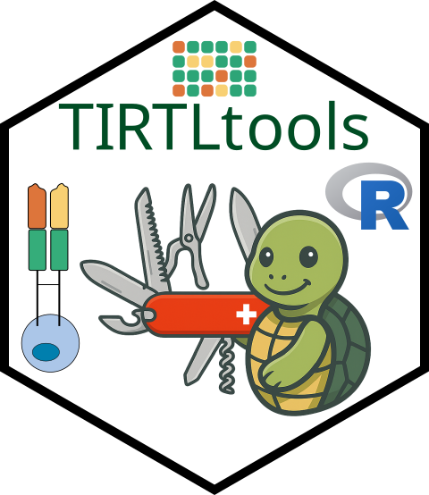

Convert individual well .tsv files to faster loading binary format
write_well_data_to_binary.Rd![[Experimental]](figures/lifecycle-experimental.svg)
This function takes in a folder of .tsv files with TCRalpha and TCRbeta read counts of individual wells and converts the data from a subset of these wells (or all wells) to sparse matrices (well x clone) of read counts along with metadata data frames for each clone.
This output can then be quickly loaded with load_well_counts_binary()
and used in the future as input to
the plot_tshell() function.
Usage
write_well_data_to_binary(
folder_in,
folder_out,
prefix,
wells = get_well_subset(1:16, 1:24),
in_file_type = c(".tsv", ".parquet"),
out_file_type = c(".rds", ".h5"),
well_pos = 3,
parallel = FALSE,
nproc = data.table::getDTthreads(),
columns = NULL,
max_files = Inf,
periods_to_underscores = TRUE,
to_sparse_matrix = TRUE
)Arguments
- folder_in
the directory with ".tsv" files with read counts for each well
- folder_out
the directory to write the output data to (if this does not exist, it will be created)
- prefix
a prefix with the sample name that will be prepended to the output file names
- wells
a vector of the wells corresponding to the sample (default is all wells on the 384-well plate)
- in_file_type
the type of files in
folder_in(default is ".tsv")- out_file_type
the type of output file for the sparse read count matrices for TCRalpha and TCRbeta (default is ".rds")
- well_pos
the position of the well ID (e.g. "B5") in the file names (when separating by underscores). For example, files named "
<well_id>_TCRalpha.tsv" would use well_pos=3. (default is 3) - parallel
whether to use multiple processors when loading the data (default is FALSE)
- nproc
number of processors to use when parallel is TRUE
- columns
columns of files to read (default is all columns)
- max_files
(for testing purposes) the maximum number of files to load (default is all files)
- periods_to_underscores
whether to convert periods to underscores in well files names for determining the well name from
well_pos. Default is TRUE to allow for compatibility with some pre-existing datasets.- to_sparse_matrix
whether to write the read counts to a sparse matrix vs. a long data frame (default is TRUE)